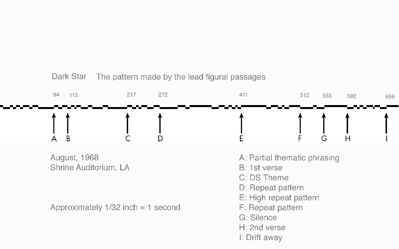
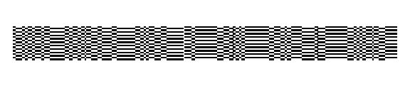
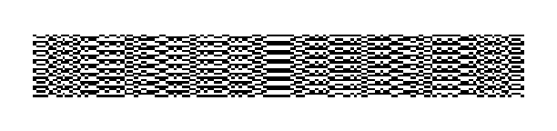

It's an uncomfortable experience that practically every lover of Grateful Dead music has encountered: trying to explain the mojo of the Grateful Dead to someone who has never heard them before. There's the "Best Pop Hope" technique: flip on "Truckin'" and hope for the best; the "Literary History Technique": you start out with a long exegesis on the Beats, Cassidy and the Acid Trips before launching into "That's It For The Other One"; and the frontal assault on any commonly-held misconceptions, the "Metallica They Ain't" technique: playing the entire American Beauty CD in endless repeat mode.
Truth is, none of these gambits is likely to succeed. The musical world of the Dead is too broad for any single or CD to cover and it is the breadth itself that is a major hook for Deadheads. Breadth alone is insufficient though for, in certain tunes that open into jams, it is the depth of musical exploration that is the turn-on. And, of course, the fact that this music evolved in performance over a thirty year period of time plays a significant role. So one could say that the Dead is four-dimensional: the breadth, depth and time components all combine to produce the musical heights.
For me, an appreciation of the Dead's music has come primarily from recorded sources. Never a "tour-head", my concert experiences were widely scattered between 1974 and 1994. But in all that time, the Dead were constant companions through commercial recordings as well as tapes from shows. My introduction to the Dead came from a simple comment upon the release of the LiveDead album in 1970. Someone (it could have been a printed review of the album) said, "'Dark Star' is to rock music as the Taj Mahal is to tomb stones." So I marched right down to my local record store, purchased said commodity, came home, put on headphones and basically lost the following two hours of my life. From the first strains of the Lesh-Garcia dialogue coming out of a "Mountains of the Moon" jam to the truncated "Bid You Goodnight", this was the most interesting music I'd ever heard. It took me to Saturn and it brought me back home, via Detroit, to the Kentucky hill country. I could enjoy the limbic frenzy of "Lovelight" or workout the cerebrum with all those tenuous musical relationships in "Dark Star". In between was the crazy "St. Stephen" that somehow mutated into the anti-anthemic "The Eleven." The passage of time has only solidified its place as one of the great records of the 20th century. For me, it will always be the ideal place to start an acquaintance with the music of The Grateful Dead. When people inquire, I give them the CD version and tell them to go home, wait til the kids are in bed, pour a glass of Merlot or employ a similar relaxant, put on headphones and give me a call in the morning. Extremely high success rate.
And so it came to pass that years later, when asked to participate in an academic conference about aesthetic experience, my paper focused on the "aesthetics of transcendence" and, in particular, the manner in which "Dark Star" achieves its power. That paper used "Dark Star" and a Mass by 15th Century composer Jacob Obrecht to make certain technical points about semiotic theory, stuff that is beyond the interests of this readership. So what I want to do below is to summarize some aspects of semiotic and aesthetic theory that reflect upon the "Dark Star" experience and then expand the discussion to cover particular "Dark Stars". Writing about music may be like dancing about architecture but dancing is fun, right?
I should begin by explaining what semiotics is, but you should know that just as any brief musical introduction to the Dead is bound to be not only insufficient but somehow "wrong", so any brief comment about semiotics is seriously compromised. At its root, semiotics is the study of signs in their capacity as "ways of knowing". In other words, anything that you come to know you encounter only through the mediacy of signs. Appearances, words, sounds, these are all considered signals a kind of continuous processing of signs. We look at a visual thing, it is a sign to us of something, and we interpret it. That three-fold complex sign, its object, and interpretation is the key idea that semioticians play with. Semioticians look at how meaning is formed.
Now here's how semiotics intersects aesthetics (the philosophy of art): If there are all these signs, and if they mean certain things to people, there must be patterns, habits or rules that apply to them and predict the way in which they work. In language these rules are fairly precisely worked out. For example, in any given language, you have grammatical and syntactical rules which are so clear that they can laid out systematically in language courses. But what are the "rules" by which something like art operates? Are there ways of predicting the meaning of a work of art? Clearly, when you consider the work of art as a sign, the "rules" become a lot fuzzier.
In his Theory of Semiotics, Umberto Eco (you may know him as the author of the novel, Name of the Rose) brings semiotic theory together with a certain branch of aesthetic theory. The aesthetic theory is known as the aesthetics of transcendence. Developed largely from the ideas of Schopenhauer, and later in the early 20th century by Croce and Collingwood, this theory sees art as that which produces a holistic sense of "going beyond" normal life experiences. This transcendence is called the aesthetic experience and things that cause the aesthetic experience are called art.
Eco's semiotics of aesthetics picks up Bennedetto Croce's ideas. Summarizing Croce's theory of art as one where Îthe whole life of the cosmos breathes within the artistic representation, the individual pulsates with the life of the Whole, and the Whole is revealed in the life of the individual (Eco pg. 262), Eco quotes from Croce's Brevario di Estitica:
"Every genuine artistic representation is in itself the universe...In every word the poet writes and in every creature of his imagination there lies the whole of human destiny, all hopes, illusions, griefs, joys, greatness and misery; the entire drama of Reality, which develops and grows up on itself for ever, suffering and rejoicing..."Eco's move is to relate this experience, described in such florid terms by Croce, to semiotic concepts described by the great linguist Roman Jakobson. Jakobson outlined six ways that a verbal text could function as a communicative tool. One of those communicative functions he called the "poetic" function. But the poetic function, says Eco (pg. 262), is best thought of as a more general aesthetic function so that it can be applied to things other than words. According to Jakobson, a message assumes the poetic (cum-aesthetic) role when it is both ambiguous and self-focusing.
(Eco pg.262)
Ambiguity is defined by Eco as something that happens when the "rules of the code" are violated. In other words, a reader or viewer or listener is unsure what is going on. But there are different types of ambiguity. When something is completely ambiguous in terms of what it denotes, a kind of complete bafflement results. But another type of ambiguity is stylistic ambiguity in which something might clearly denote something else, but do so in a manner which doesn't fit conventional patterns of behaviour. Such stylistically ambiguous works lie outside the normal pattern of doing things. A person may walk down the street to get a newspaper, but if she does this by crossing the street several times, zig zagging, spinning and twirling a baton as she goes, her style of walking begins to be really different from what we are used to seeing. And when that happens, it attracts attention.
And that, according to Eco, is the importance of ambiguity--especially stylistic ambiguity. It alone is not enough to produce the aesthetic effect, but it can cause us to watch it more attentively. And that can begin to cause the feedback loop that produces the aesthetic effect:
"...ambiguity is a very important device because it functions as a sort of introduction to the aesthetic experience; when, instead of producing pure disorder, it focuses my attention and urges me to an interpretive effort ...it incites me toward the discovery of an unexpected flexibility in the language with which I'm dealing." (pg. 263).
The aesthetic text is both ambiguous and self-focusing. Because a violation of norms "incites" further discovery and attention, a process begins in which the listener is compelled to pay attention to finer and finer details of the music. We have here a kind of circular process in which the music, through its departure from norms, causes greater attention to be focused upon it, which again leads us to notice variations from norms which causes closer focusing, and so on until we are completely absorbed, so to speak, in the music's very fabric.
This is the crux of Eco's semiotics of aesthetic experience and it is exemplified beautifully by a "Dark Star". The essence of Eco's ideas and the central raison d'etre for "Dark Star" itself is simply stated: surprise. There is a special delight in the unknown, the adventure of discovery, the unexpected relationships of mood, form, and texture. "Dark Star" can be like walking a circle in which the farther you go the closer you get to your beginning. Or it can be like a straight shot to elsewhere - a one way ticket. Always, it is a journey where you better enjoy the ride because the destination is uncertain (ambiguous) and the only thing to hang onto is where you've been and where you are at the moment (self-focused).
The journey is made all the more compelling given the stunningly simple starting point. Look at those lyrics:
Dark Star crashes
pouring its light into ashes-
Reason tatters,
the forces tear loose from the axis-
Searchlight casting
for faults in the clouds of delusion-
Shall we go,
you and I while we can-
through
the transitive nightfall of diamonds?
--Robert Hunter, 1968
The metaphorical connection of a neutron star or black hole is connected to the surrender of will/reason, and it is matched by the form of the music, which uses this verse as only a short pause of reflection. The verse is a "searchlight casting for faults in the clouds of delusion" if you will, before the music plunges into increasingly complex, agitated and tangential thematic improvisations. The sung verse--simple, quiet, pure--is a stationary point upon which the music rests for a short moment (like a sigh) before flitting off once more on its restless journey.
The words are just pointers to what the music is doing. They are, by themselves, not profound. Yet, placed within the music, they become wholly satisfying. They comprise the musical setting, the familiar "Dark Star" theme which becomes a kind of home. Most of your time listening to "Dark Star" is not spent at home, though; it is spent in far-flung explorations in which occasional reminders of home are more likely to emphasize your distance away from there. And it is in this relationship between home and the places away from home that makes the music aesthetically satisfying in the transcendental sense. You don't know where you are, and you can't rest on a familiar repetition of chords and beats. Your place is wholly ambiguous and the only thing you can do is hold onto the musical moments as they flow continuously by. This is a trait of all improvised art to some extent, and in "Dark Star" we see a prime example of it.
In the two studies that follow, "Dark Star" will be seen as avoiding the pop stylistic norm of simple repetition of verse, chorus, verse, chorus. Yet what I hope also emerges, is that it is never completely random either. There is a kind of latent structure which serves to keep our attention focused.
Then there is the July 27, 1972 (Veneta) "Dark Star" which caused me to be late once for an important business meeting because it was a new tape and unexpected and it was spring and the wind blowing through my hair as I motored down the country lane and it was loud and ...hey...what exit was that? Veneta will always occupy a special place for its extreme pressing of the boundaries of sanity. It attempts sonic objects that lie outside the range of audibility. It is as adventurous as they come. As is frequent in post-1970 Stars, it has dispensed with the second verse entirely. You can never go home again... only Furthur.
The September 19, 1970 "Dark Star" is worth special note as well. It is the Dr. Jekyll/Mr. Hyde Star. You get Hyde first. Immediately after the first verse, everything stops dead. Suddenly a nightmare vision arises fully formed and uncomfortably close. But if you can abide it, you will get the treat of one of the most rollicking and delightful jams that cannot help but put a smile on your face and make you feel as if you'll never die.
Any of these is worthy of a detailed look. But I've selected two for present purposes that are available on CD. We'll take a closer look at these and try to see what kind of things are going on in the music. I won't use any musicological terms here...just plain descriptive language. Minutes and seconds will be the unit of measure. The first version, from 1968, is shorter and makes it more feasible to display its structure visibly. So I will provide an image of it for you to see and print out.

The first "Dark Star"'s structure is mapped out visually. Each second of music is accounted for and each musical phrase is plotted along the x axis. The offsetting of the lines is only done to help you to see the "breaks" between one phrase and the next. In this 1968 DS the breaks are fairly easy to hear. The 1969 and later Stars tend to be more liquid. It's interesting to see that the overall structure shown in this way, phrase by phrase, still has a kind of rhythm to it, punctuated by long sustained sections. It is also interesting to notice the similarity of some of the smaller structures. In order to see the beauty of this structure more clearly, try this example of a pattern made entirely from this "Dark Star" structure.

Here's another one.

I won't say much about these. I think the visual qualities of the structure say all that needs to be spoken of the ambiguity and also of the relatedness of the structure. Even the visual diagram is self-focusing. It is hard to look away from it don't you think?I wanted the visual to do the talking for the first 1968 "Dark Star", but I will be verbal about the second. I want to examine it in some detail. If you have the CD you can follow along using the timings. (Please note that these timings may be slightly different than what you get though since I made them using a stop watch off the original LP.)
February 27 (?), 1969 Live/Dead
The "Dark Star" appearing on Live/Dead was apparently recorded the evening of February 27th, 1969. The record was compiled from performances that night and the following night. (Note: I would very much like confirmation that this is the correct date and also information on possible later studio overdubs or splices. Can anyone help on this?). Unquestionably one of the great ones, this Star has about it a mood of seriousness and urgency. In the six months since the 2FTV recording, the piece has blossomed into a monster of band interaction. In excess of 23 minutes, this version is exactly double the length of the 1968 example. There are over 120 musical phrases here and they are more difficult on the whole to clearly segment. Instead they seem to intermingle and often submerge into each other or to interpenetrate in such way as to make the clear marking of their beginning or end impossible.
There is also a similar intermingling of the band's parts. Weir and Lesh in particular have important parts to play in carrying the variations along.
There is the familiar repeated four note call which begins the piece (at 1:15) and a string of six very conversational Garcia phrases before dropping into ten seconds of silence leading into the highly articulated DS thematic material. This is material that shows up in between the verses of the 1968 piece but it acts as a prelude here, still some five minutes from the first verse. After some half dozen other musical ideas are toyed with, the first extended repeat pattern occurs (4:15) . This pattern leads into a pattern that I call the Foundational pattern (5:00), being the unsung motif that undergirds the vocal line of the verse. But that pattern too falls away to silence (5:58).
The first verse is expressed at 6:05 and at its conclusion a minute later the Foundational theme leads back out, in classically symmetrical fashion, to a minute of rising tension in which no clear musical line dominates. The tension makes Jerry's beginning of the inter-verse jam (8:09) an eruption of cathartic proportions. This jam is one of the marvels of late 20th century improvisatory art. Over the next thirteen minutes, over eighty musical ideas will be strung together in a dozen thematic sections in essentially a single key structure. Or maybe it is in infinite key structure, for it is not always clear that key structure prevails at all.
When the second verse comes around some 21 minutes and 51 seconds after the ride has begun, we feel as if we are the twin in Einstein's paradox who, after travelling at the speed of light, arrives back on earth to find everything recognizable has been swept away by the passage of time--time which for traveler has stood still.
The technique of using a repeating pattern dissolving to silence before introducing the "Dark Star" verses becomes here a device employed many times. We have mentioned it in the prelude to the first verse, and it appears again several times in the inter-verse jam. The first three minutes of the jam involve a sequence of small thematic fragments displaced from the basic melody and articulated with different effects. There is a kind of pleading motif (8:37-8:47), a soft echo effect (9:25), an angular theme at 9:41. By 10:00 the emotional tone lowers along with the timbre of the instruments which decline into an oboe-like lower register (10:31). All of this is simply prelude for the fireworks, however, because the DS theme is about to be completely and methodically decomposed and space is about to be stretched or shrunk depending upon your viewpoint. First, the lead note of the theme is repeated several times (10:53 and following) before being subjected to an echo (11:22) recalling that of two minutes previously. Next, we are given a narrow three-step arpeggio which after an overkill forty seconds moves to the same figure an octave higher for thirty more! This portion of the program, folks, is known to produce lower jaw pain in some teeth-grating auditioners. But the tension of this minute of repetition is released by another silence: a pause that leads into a haunting distant echoing of the DS theme with the most delicate feedback overtone.
At this point, we have alternations between patter and silence, between up-close clarity and distant echo, and between thematic purity and fragmentation. In true Hegelian fashion, where every thesis has its antithesis and every thesis-antithesis pair its ultimate synthesis, what this "Dark Star" jam does next is to combine the feelings of the first two minutes (8:09 - 10:53) which were characterized by two-second (ie measure-by-measure) fragmentations of the theme and the subsequent two minutes ( 11:04- 13:21) which are characterized by stationary rhythmic patterns and lead guitar pauses or silences. in some seven minutes of interaction, these types are combined and recombined in always different ways. Some of the typical ways this is done can be shown in the following chart in which short two-second fragments (F), stationary rhythmic patterns (P), and pauses or silence (S) are indicated:
Time Case 13:32 F> 14:05 P 14:49 F> 16:40 S 18:24 S> 18:29 Theme 18:50 P> 19:16 S 20:28 F> 21:00 Theme> 21:30 S> 21:51 2nd Verse
The point here is that there is a sort of grammar to the improvisations such that they tend to cluster into certain kinds of structural types and these types are then put together in different ways. In the case of the February 27th 1969 "Dark Star", these structures tend to be complex and always changing, yet very "classical": they have a situation, a counter situation, and a resolution all within the inter-verse jam.
These examinations have only looked at the pattern of phrases of the music. They say little of the tonal quality, the texture, the dynamics, the melodic or the counterpoint of the instruments. There's so much in this music, so little space and time to look at it. But such an analysis can be like a good "Dark Star" itself: the journey is so enjoyable, how can one be disappointed if there is always more of it to come?
References